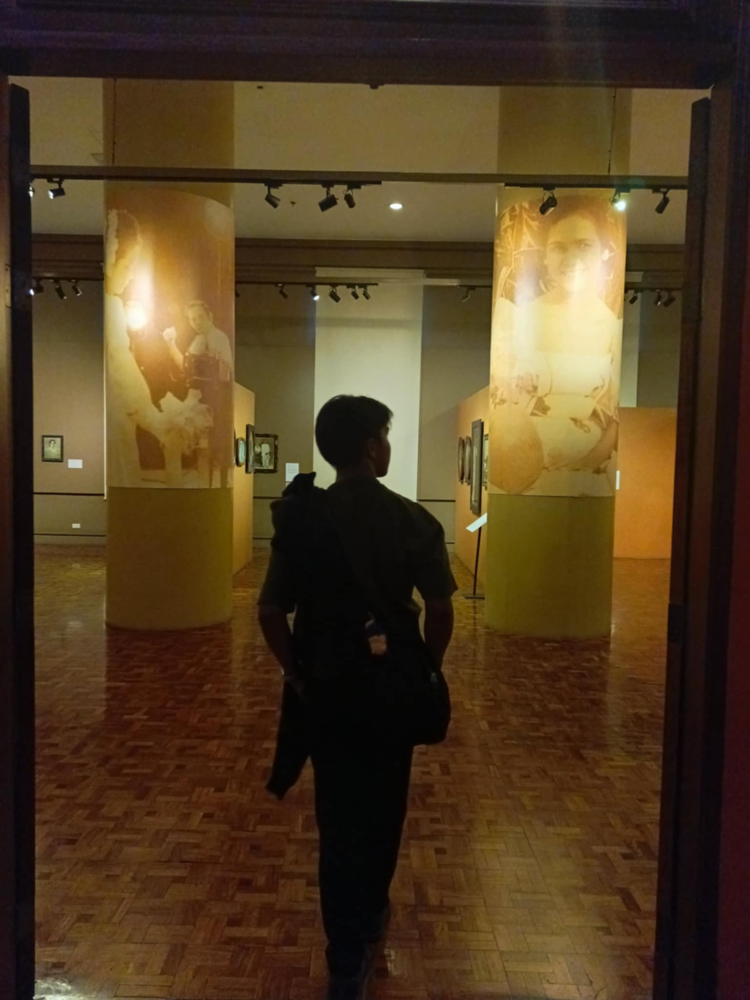

D
aven Sincosa
Daven Sincosa is an encoder, Jollibee crew, barangay basketball player, and a rider.
Daven Sincosa is an encoder, Jollibee crew, barangay basketball player, and a rider.

Scores
Assists
Rebounds
Awards
“Despite feeling the effects of little sleep, I start my day with a workout to boost my energy and mindset. After that, I focus on my morning work tasks, trying to stay productive even if my body feels drained. Later in the day, I attend my scheduled class, doing my best to stay alert and engaged. It's a tiring routine, but I keep pushing through because I know each part of it brings me closer to my goals."

Reader
“ Don't see failure as a signal to stop, see it as a sign to begin again”
Reader